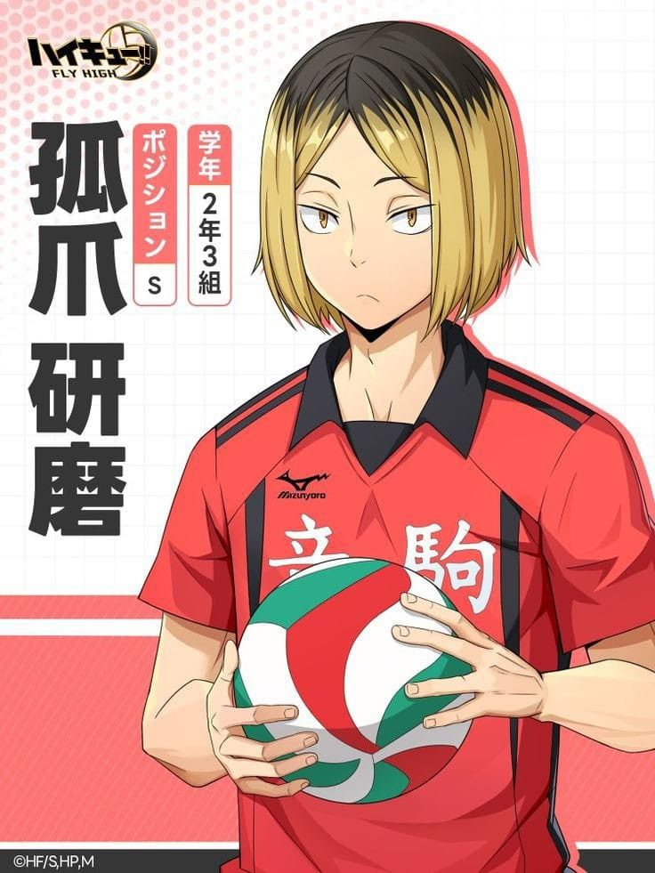
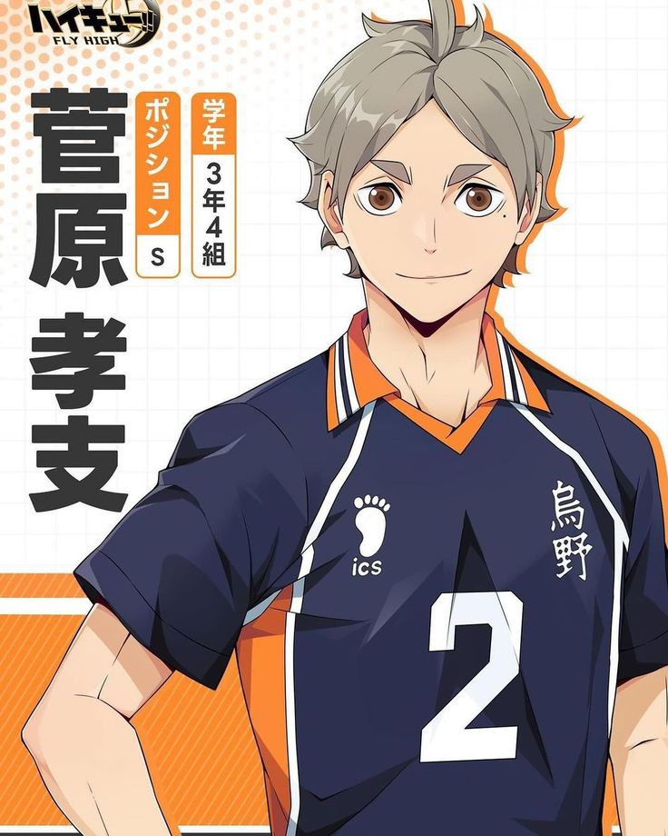
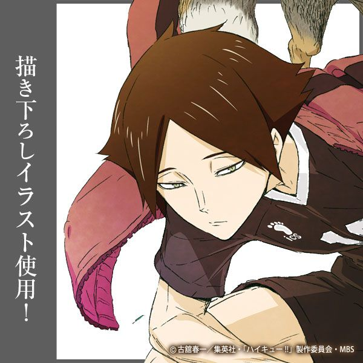
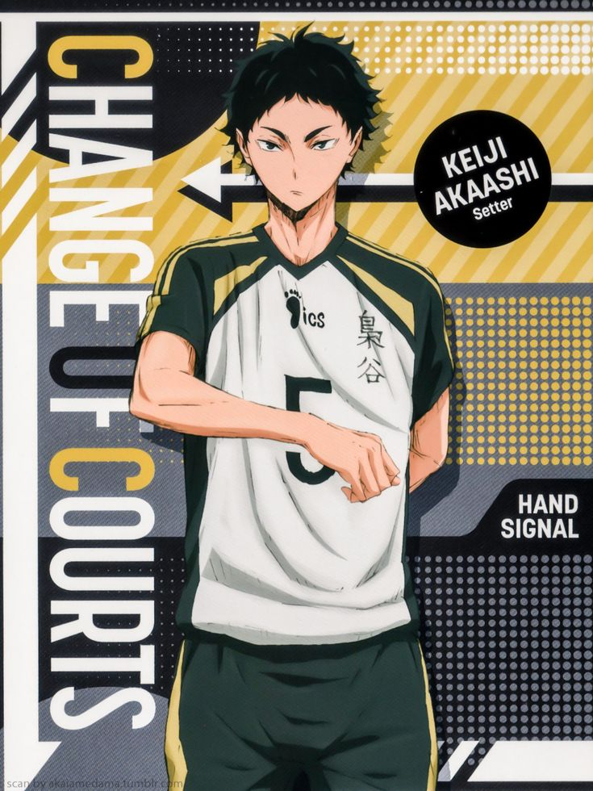

| Characters |
Information |
Position and ability |
.jpeg) |
His name is Hinata Shoyo. He is very cheerful and competitive.
|
He is a wingspiker and has the ability to jump very high |
|  |
His name is Kenma Kozume. He is usually very quiet and composed. He rarely loses his temper and doesnt get excited often, but he has exceptions. Those exceptions are video games and Hinata. |
He is a setter and is called the "brain" of their team because he has the ability to develop plans against opponents during a play of volleyball. |
|  |
He is Sugawara Koushi. He is very calm, soothing, and gentle. He acts as a pillar to support his team. |
He is a setter and is sometimes called as Mr. Refreshing because even during an intense game, he is able to refreshen everyone up with his soothing personality and his calm mind. |
|  |
He is Suna Rintarou. He is also quiet like kenma and prefers to observe than to engage in his surroundings. |
He is a middle blocker and has the ability to control and move his body however he wants which makes it hard to block his spikes. |
|  |
His name is Akaashi Keiji. He is calm and composed most of the time. |
He is the setter and vice captain of his team. His ability is to provide easy-to-hit sets to any member of his team. |